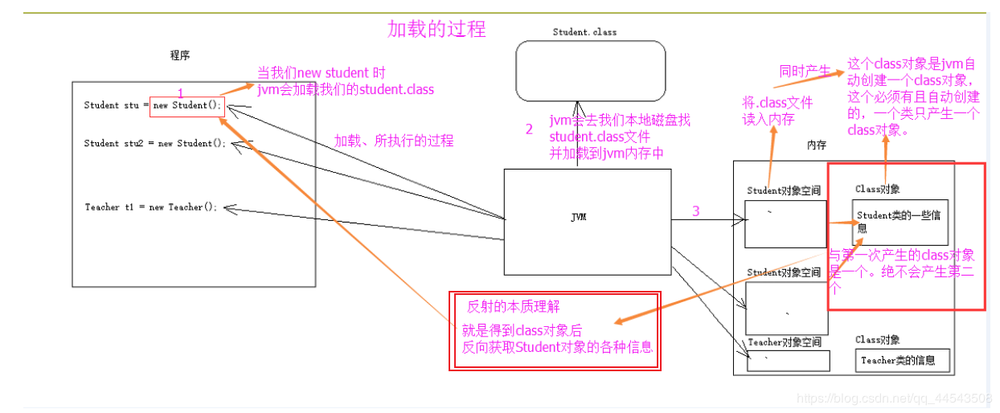

原文连接:https://www.cnblogs.com/yichunguo/p/11832728.html
目录
前言
很多讲解反射的博客文章并没有详细讲解Class类，~当然包括之前的我也一样~，这样的文章只会让反射徒有其表，并不能让大多数初学者真正理解反射，而恰恰反射的原理就在于Class对象！可见他的重要性，这篇文章我将总结一下关于Class类的知识，可能还不是很全面，各位担待点哈QnQ，我之前也写过几篇关于反射的文章，主要是反射真的太重要了，现在重新总结一篇~主要是前面总结的太潦草了~，对反射重新认识顺道再结合一些优秀文章再总结一下。
参考资料：
JDK1.8_API.../docs/api/java/lang/Class.html
http://www.ibm.com/developerworks/cn/java/j-lo-classloader/
https://blog.csdn.net/sinat_38259539/article/details/71799078
@
1、反射的概述
一句话定义反射就是在运行时才知道要操作的类是什么，并且可以在运行时获取类的完整构造，并调用对应的方法，所谓反射其实是获取类的字节码文件，也就是.class文件。平时我们要调用某个类中的方法的时候都需要创建该类的对象，通过对象去调用类里面的方法，反射则是一开始并不知道我要初始化的类对象是什么，自然也无法使用 new 关键字来创建对象了，在这种情况下（没有创建对象）我们都能够对它的方法和属性进行调用，我们把这种动态获取对象信息和调用对象方法的功能称之为反射机制。
反射才体现出java是如何创建对象的。当java虚拟机(JVM)加载一个
class类文件时，就创建这个类的class对象，以后的对象都是由这个class对象创建的，所以同一个类的所有对象的class对象都是一个，比如A a=new A(); A b=new A();a.class()==b.class()返回true.
2、正式使用反射之前很有必要了解的Class类
很多讲解反射的博客文章并没有详细讲解Class类，~当然包括之前的我也一样~，这样的文章并不能让大多数初学者真正理解反射，而恰恰反射的原理就在于Class对象！可见他的重要性，这篇文章我将总结一下关于Class类的知识，可能还不是很全面，各位担待点哈~
首先，我要给初学者或者小白定位一下对Class类的理解。常用类有String类、Math类等等，这里的Class也是一个类似于String类、Math类等等的类，和我们随便创建的类的概念是有本质区别的，Class类位于
java.lang包下！
大家到知道，一个类拥有成员变量、方法、构造方法、所在包、字段属性等等成分组成，而反射就是把java类中的各种成分映射成一个个的Java对象，可以理解为利用反射技术对一个类进行“解剖”，把各个组成部分映射成一个个的对象。其实，一个类中这些成员方法、构造方法、在加入类中都有一个Class类来描述，在正式使用反射之前，很有必要先来了解了解这个Class类！
反射的原理就在于
Class对象
2.1、 普通类的加载过程
熟悉一下加载的时候：Class对象的由来是将class文件读入内存，并为之创建一个Class对象。反射的本质理解就是得到Class对象后反向获取Student对象的各种成分信息（成分信息包括成员变量、方法、构造方法、所在包、字段属性等等），下面就以Student对象为例，图解Student类的正常加载过程~

可以看出图中这个Class对象很特殊。我们进一步了解一下这个Class类！
2.2、 分析Class类的API（1.7的API）

Class 类的实例表示正在运行的 Java应用程序中的类和接口。也就是jvm中有N多的实例每个类都有该Class对象。（包括基本数据类型） Class 没有公共构造方法。Class对象是在加载类时由 Java 虚拟机以及通过调用类加载器中的defineClass方法自动构造的。也就是这不需要我们自己去处理创建Class对象，JVM已经帮我们创建好了。
2.3、 Class类的常用方法
Class类没有公共的构造方法，JVM会自动帮我们创建好，但方法却共有64个，这里主要讲一下常用的方法。
1、getName() : 返回此 Class对象所表示的实体（类、接口、数组类、基本类型或 void）名称
一个Class对象描述了一个特定类的属性，Class类中最常用的方法getName以 String 的形式返回此 Class
对象所表示的实体（类、接口、数组类、基本类型或 void）名称。
2、newInstance(): 为类创建一个实例，但只能调用默认构造器（无参数构造器）
Class还有一个有用的方法可以为类创建一个实例，这个方法叫做newInstance()。例如：
x.getClass.newInstance()，创建了一个同x一样类型的新实例。newInstance()方法只能调用默认构造器（无参数构造器）初始化新建对象。
3、getClassLoader()
getClassLoader() 方法主要返回该类的类加载器。
4、getComponentType()
getComponentType() 方法主要返回表示数组组件类型的 Class。
5、getSuperclass()
getSuperclass() 返回表示此 Class 所表示的实体（类、接口、基本类型或 void）的超类的 Class。
6、isArray()
isArray() 判定此 Class 对象是否表示一个数组类。
需要注意一点的是，forName和newInstance结合起来使用【 Class.forName()方法下面会单独讲解】，可以根据存储在字符串中的类名创建对象。例如
Object obj = Class.forName(s).newInstance();另外虚拟机为每种类型管理一个独一无二的Class对象,也就是说Class对象是惟一的。因此可以使用==操作符来比较类对象。例如：
if(e.getClass() == Employee.class)…2.4、 Class.forName()方法
Class.forName()是一种获取Class对象的方法，而且是静态方法。
Class.forName()是一个静态方法，同样可以用来加载类，Class.forName()返回与给定的字符串名称相关联类或接口的Class对象。注意这是一种获取Class对象的方法
官方给出的API文档如下
publicstatic Class<?> forName(String className)
Returns the Class object associated withthe class or interface with the given string name. Invokingthis method is equivalent to:
Class.forName(className,true, currentLoader)
where currentLoader denotes the definingclass loader of the current class.
For example, thefollowing code fragment returns the runtime Class descriptor for theclass named java.lang.Thread:
Class t =Class.forName("java.lang.Thread")
A call to forName("X") causes theclass named X to beinitialized.
Parameters:
className - the fully qualifiedname of the desired class.
Returns:
the Class object for the classwith the specified name.可以看出，Class.forName(className)实际上是调用Class.forName(className,true, this.getClass().getClassLoader())。第二个参数，是指Class被loading后是不是必须被初始化。可以看出，使用Class.forName（className）加载类时则已初始化。所以Class.forName()方法可以简单的理解为：获得字符串参数中指定的类，并初始化该类。
2.5、关于Class类值得思考的问题
1.在初始化一个类，生成一个实例的时候，newInstance()方法和new关键字除了一个是方法，一个是关键字外，最主要有什么区别？
它们的区别在于创建对象的方式不一样，前者是使用类加载机制，后者是创建一个新类。
2.那么为什么会有两种创建对象方式？
这主要考虑到软件的可伸缩、可扩展和可重用等软件设计思想。 Java中工厂模式经常使用
newInstance()方法来创建对象，因此从为什么要使用工厂模式上可以找到具体答案。例如下面代码
class c = Class.forName(“Example”);
factory = (ExampleInterface)c.newInstance(); 其中ExampleInterface是Example的接口，可以写成如下形式：
String className = “Example”;
class c = Class.forName(className);
factory = (ExampleInterface)c.newInstance(); 进一步可以写成如下形式：
String className = readfromXMlConfig;//从xml 配置文件中获得字符串
class c = Class.forName(className);
factory = (ExampleInterface)c.newInstance(); 上面代码已经不存在Example的类名称，它的优点是，无论Example类怎么变化，上述代码不变，甚至可以更换Example的兄弟类Example2 , Example3 , Example4……，只要他们继承ExampleInterface就可以。
3.从JVM的角度看，我们使用关键字new创建一个类的时候，这个类可以没有被加载。 但是使用newInstance()方法的时候，就必须保证：
1、这个类已经加载；
2、这个类已经连接了。
而完成上面两个步骤的正是Class的静态方法forName()所完成的，这个静态方法调用了启动类加载器，即加载 java API的那个加载器。 现在可以看出，newInstance()实际上是把new这个方式分解为两步，即首先调用Class加载方法加载某个类，然后实例化。这样分步的好处是显而易见的。我们可以在调用class的静态加载方法forName时获得更好 的灵活性，提供给了一种降耦的手段。
4、加载数据库驱动的时候Class.forName的一个很常见的用法是在加载数据库驱动的时候，代码如下：
Class.forName("com.gx.sqlserver.jdbc.SQLServerDriver");
Connection con=DriverManager.getConnection("jdbc:sqlserver://localhost:1433;DatabaseName==NP","jph","jph"); 为什么在我们加载数据库驱动包的时候有的却没有调用newInstance( )方法呢？即有的jdbc连接数据库的写法里是Class.forName(xxx.xx.xx);而有一些：Class.forName(xxx.xx.xx).newInstance()，为什么会有这两种写法呢？
刚才提到，Class.forName(" ")的作用是要求JVM查找并加载指定的类，如果在类中有静态初始化器的话，JVM必然会执行该类的静态代码段。而在JDBC规范中明确要求这个Driver类必须向DriverManager注册自己，即任何一个JDBCDriver的Driver类的代码都必须类似如下：
public classMyJDBCDriver implements Driver {
static{
DriverManager.registerDriver(new MyJDBCDriver());
}
} 既然在静态初始化器的中已经进行了注册，所以我们在使用JDBC时只需要Class.forName(XXX.XXX);就可以了。
5、最后用最简单的描述来区分new关键字和newInstance()方法的区别：
newInstance: 弱类型。低效率。只能调用无参构造。
new: 强类型。相对高效。能调用任何public构造。
到这里，Class类就差不多了，可以开始学习使用反射了。
3、反射的使用
在 JDK 中，反射相关的 API 可以分为下面几个方面：获取反射的 Class 对象、通过反射创建类对象、通过反射获取类属性方法及构造器。
3.1、获取Class对象的三种方式
对于为什么第一步是获取Class对象，是因为我在前面讲到过反射的本质理解就是得到Class对象后反向获取Student对象的各种成分信息（成分信息包括成员变量、方法、构造方法、所在包、字段属性等等），所以反射的第一步是获取需要被反射的类的Class对象。
1、使用
Class.forName静态方法。
当你知道该类的全路径名时，你可以使用该方法获取 Class 类对象【最常用，必须掌握】
2、使用.class方法。
这种方法只适合在编译前就知道操作的 Class，但是这种方法需要导入类的包，依赖性太强，所以用的比第一种稍微要少 【重点】
3、使用类对象的getClass()方法。
这种方法已经创建了对象，那么这个时候就不需要去进行反射了，显得有点多此一举。【不常用，了解即可】
//第一种，使用Class.forName 静态方法。
Class Student= Class.forname("com.FanSe.Student");//类的全路径名
//第二种，使用 .class方法。
Class Student= 类名.class;//这种方法需要导入类的包，依赖性太强
//第三种，使用类对象的 getClass() 方法。
Student str = new Student();
Class clz = str.getClass();小结：开发中一般都用第一种Class.forName 静态方法，可以一个字符串传入（类的全路径名）也可写在配置文件中等多种方法。而且需要注意的是在运行期间，一个类，只有一个Class对象产生。
3.2、反射获取构造方法并使用
1).批量获取构造方法：
public Constructor[] getConstructors()：所有"公有的"构造方法
public Constructor[] getDeclaredConstructors()：获取所有的构造方法(包括私有、受保护、默认、公有)
2).获取单个的方法，并调用：
public Constructor getConstructor(Class... parameterTypes)：获取单个的"公有的"构造方法：
public Constructor getDeclaredConstructor(Class... parameterTypes)：获取"某个构造方法"可以是私有的，或受保护、默认、公有；
3）调用构造方法：
Constructor-->newInstance(Object... initargs)
newInstance是 Constructor类的方法（管理构造函数的类），api的解释为：newInstance(Object... initargs)，使用此 Constructor 对象表示的构造方法来创建该构造方法的声明类的新实例，并用指定的初始化参数初始化该实例。它的返回值是T类型，所以newInstance是创建了一个构造方法的声明类的新实例对象。并为之调用。
反射获取构造方法总结：当我们去获取类构造器时，如果要获取私有方法或私有构造器，则必须使用有
declared关键字的方法。【当然不止构造器，获取类方法、类属性也是一样使用 declared 关键字的方法】下面开始进入实践代码阶段
创建一个普通Student 类
package fanshe;
public class Student {
//---------------构造方法-------------------
//（默认的构造方法）
Student(String str){
System.out.println("(默认)的构造方法 s = " + str);
}
//无参构造方法
public Student(){
System.out.println("调用了公有、无参构造方法执行了。。。");
}
//有一个参数的构造方法
public Student(char name){
System.out.println("姓名：" + name);
}
//有多个参数的构造方法
public Student(String name ,int age){
System.out.println("姓名："+name+"年龄："+ age);//这的执行效率有问题，以后解决。
}
//受保护的构造方法
protected Student(boolean n){
System.out.println("受保护的构造方法 n = " + n);
}
//私有构造方法
private Student(int age){
System.out.println("私有的构造方法 年龄："+ age);
}
}编写测试类
package fanshe;
import java.lang.reflect.Constructor;
/*
* 通过Class对象可以获取某个类中的：构造方法、成员变量、成员方法；并访问成员；
*
* 1.获取构造方法：
* 1).批量的方法：
* public Constructor[] getConstructors()：所有"公有的"构造方法
public Constructor[] getDeclaredConstructors()：获取所有的构造方法(包括私有、受保护、默认、公有)
* 2).获取单个的方法，并调用：
* public Constructor getConstructor(Class... parameterTypes):获取单个的"公有的"构造方法：
* public Constructor getDeclaredConstructor(Class... parameterTypes):获取"某个构造方法"可以是私有的，或受保护、默认、公有；
*
* 调用构造方法：
* Constructor-->newInstance(Object... initargs)
*/
public class Constructors {
public static void main(String[] args) throws Exception {
//1.加载Class对象
Class clazz = Class.forName("fanshe.Student");
//2.获取所有公有构造方法
System.out.println("**********************所有公有构造方法*********************************");
Constructor[] conArray = clazz.getConstructors();
for(Constructor c : conArray){
System.out.println(c);
}
System.out.println("************所有的构造方法(包括：私有、受保护、默认、公有)***************");
conArray = clazz.getDeclaredConstructors();
for(Constructor c : conArray){
System.out.println(c);
}
System.out.println("*****************获取公有、无参的构造方法*******************************");
Constructor con = clazz.getConstructor(null);
//1>、因为是无参的构造方法所以类型是一个null,不写也可以：这里需要的是一个参数的类型，切记是类型
//2>、返回的是描述这个无参构造函数的类对象。
System.out.println("con = " + con);
//调用构造方法
Object obj = con.newInstance();
// System.out.println("obj = " + obj);
// Student stu = (Student)obj;
System.out.println("******************获取私有构造方法，并调用*******************************");
con = clazz.getDeclaredConstructor(char.class);
System.out.println(con);
//调用构造方法
con.setAccessible(true);//暴力访问(忽略掉访问修饰符)
obj = con.newInstance('男');
}
}测试结果
**********************所有公有构造方法*********************************
public fanshe.Student(java.lang.String,int)
public fanshe.Student(char)
public fanshe.Student()
************所有的构造方法(包括：私有、受保护、默认、公有)***************
private fanshe.Student(int)
protected fanshe.Student(boolean)
public fanshe.Student(java.lang.String,int)
public fanshe.Student(char)
public fanshe.Student()
fanshe.Student(java.lang.String)
*****************获取公有、无参的构造方法*******************************
con = public fanshe.Student()
调用了公有、无参构造方法执行了。。。
******************获取私有构造方法，并调用*******************************
public fanshe.Student(char)
姓名：男
3.3、反射获取成员变量并调用
创建Student 类
package fanshe.field;
public class Student {
public Student(){
}
//**********字段*************//
public String name;
protected int age;
char sex;
private String phoneNum;
@Override
public String toString() {
return "Student [name=" + name + ", age=" + age + ", sex=" + sex
+ ", phoneNum=" + phoneNum + "]";
}
}
测试类
package fanshe.field;
import java.lang.reflect.Field;
/*
* 获取成员变量并调用：
*
* 1.批量的
* 1).Field[] getFields():获取所有的"公有字段"
* 2).Field[] getDeclaredFields():获取所有字段，包括：私有、受保护、默认、公有；
* 2.获取单个的：
* 1).public Field getField(String fieldName):获取某个"公有的"字段；
* 2).public Field getDeclaredField(String fieldName):获取某个字段(可以是私有的)
*
* 设置字段的值：
* Field --> public void set(Object obj,Object value):
* 参数说明：
* 1.obj:要设置的字段所在的对象；
* 2.value:要为字段设置的值；
*
*/
public class Fields {
public static void main(String[] args) throws Exception {
//1.获取Class对象
Class stuClass = Class.forName("fanshe.field.Student");
//2.获取字段
System.out.println("************获取所有公有的字段********************");
Field[] fieldArray = stuClass.getFields();
for(Field f : fieldArray){
System.out.println(f);
}
System.out.println("************获取所有的字段(包括私有、受保护、默认的)********************");
fieldArray = stuClass.getDeclaredFields();
for(Field f : fieldArray){
System.out.println(f);
}
System.out.println("*************获取公有字段**并调用***********************************");
Field f = stuClass.getField("name");
System.out.println(f);
//获取一个对象
Object obj = stuClass.getConstructor().newInstance();//产生Student对象--》Student stu = new Student();
//为字段设置值
f.set(obj, "刘德华");//为Student对象中的name属性赋值--》stu.name = "刘德华"
//验证
Student stu = (Student)obj;
System.out.println("验证姓名：" + stu.name);
System.out.println("**************获取私有字段****并调用********************************");
f = stuClass.getDeclaredField("phoneNum");
System.out.println(f);
f.setAccessible(true);//暴力反射，解除私有限定
f.set(obj, "18888889999");
System.out.println("验证电话：" + stu);
}
}
测试效果
************获取所有公有的字段********************
public java.lang.String fanshe.field.Student.name
************获取所有的字段(包括私有、受保护、默认的)********************
public java.lang.String fanshe.field.Student.name
protected int fanshe.field.Student.age
char fanshe.field.Student.sex
private java.lang.String fanshe.field.Student.phoneNum
*************获取公有字段**并调用***********************************
public java.lang.String fanshe.field.Student.name
验证姓名：刘德华
**************获取私有字段****并调用********************************
private java.lang.String fanshe.field.Student.phoneNum
验证电话：Student [name=刘德华, age=0, sex=
由此可见，调用字段时：需要传递两个参数：
Object obj =stuClass.getConstructor().newInstance();//产生Student对象--》Student stu = new Student(); //为字段设置值 f.set(obj, "刘德华");//为Student对象中的name属性赋值--》stu.name = "刘德华"
第一个参数：要传入设置的对象，第二个参数：要传入实参
3.4、反射获取成员方法并调用
创建student类
package fanshe.method;
public class Student {
//**************成员方法***************//
public void show1(String s){
System.out.println("调用了：公有的，String参数的show1(): s = " + s);
}
protected void show2(){
System.out.println("调用了：受保护的，无参的show2()");
}
void show3(){
System.out.println("调用了：默认的，无参的show3()");
}
private String show4(int age){
System.out.println("调用了，私有的，并且有返回值的，int参数的show4(): age = " + age);
return "abcd";
}
}
编写测试类
package fanshe.method;
import java.lang.reflect.Method;
/*
* 获取成员方法并调用：
*
* 1.批量的：
* public Method[] getMethods():获取所有"公有方法"；（包含了父类的方法也包含Object类）
* public Method[] getDeclaredMethods():获取所有的成员方法，包括私有的(不包括继承的)
* 2.获取单个的：
* public Method getMethod(String name,Class<?>... parameterTypes):
* 参数：
* name : 方法名；
* Class ... : 形参的Class类型对象
* public Method getDeclaredMethod(String name,Class<?>... parameterTypes)
*
* 调用方法：
* Method --> public Object invoke(Object obj,Object... args):
* 参数说明：
* obj : 要调用方法的对象；
* args:调用方式时所传递的实参；
):
*/
public class MethodClass {
public static void main(String[] args) throws Exception {
//1.获取Class对象
Class stuClass = Class.forName("fanshe.method.Student");
//2.获取所有公有方法
System.out.println("***************获取所有的”公有“方法*******************");
stuClass.getMethods();
Method[] methodArray = stuClass.getMethods();
for(Method m : methodArray){
System.out.println(m);
}
System.out.println("***************获取所有的方法，包括私有的*******************");
methodArray = stuClass.getDeclaredMethods();
for(Method m : methodArray){
System.out.println(m);
}
System.out.println("***************获取公有的show1()方法*******************");
Method m = stuClass.getMethod("show1", String.class);
System.out.println(m);
//实例化一个Student对象
Object obj = stuClass.getConstructor().newInstance();
m.invoke(obj, "刘德华");
System.out.println("***************获取私有的show4()方法******************");
m = stuClass.getDeclaredMethod("show4", int.class);
System.out.println(m);
m.setAccessible(true);//解除私有限定
Object result = m.invoke(obj, 20);//需要两个参数，一个是要调用的对象（获取有反射），一个是实参
System.out.println("返回值：" + result);
}
}测试结果：
***************获取所有的”公有“方法*******************
public void fanshe.method.Student.show1(java.lang.String)
public final void java.lang.Object.wait(long,int) throws java.lang.InterruptedException
public final native void java.lang.Object.wait(long) throws java.lang.InterruptedException
public final void java.lang.Object.wait() throws java.lang.InterruptedException
public boolean java.lang.Object.equals(java.lang.Object)
public java.lang.String java.lang.Object.toString()
public native int java.lang.Object.hashCode()
public final native java.lang.Class java.lang.Object.getClass()
public final native void java.lang.Object.notify()
public final native void java.lang.Object.notifyAll()
***************获取所有的方法，包括私有的*******************
public void fanshe.method.Student.show1(java.lang.String)
private java.lang.String fanshe.method.Student.show4(int)
protected void fanshe.method.Student.show2()
void fanshe.method.Student.show3()
***************获取公有的show1()方法*******************
public void fanshe.method.Student.show1(java.lang.String)
调用了：公有的，String参数的show1(): s = 刘德华
***************获取私有的show4()方法******************
private java.lang.String fanshe.method.Student.show4(int)
调用了，私有的，并且有返回值的，int参数的show4(): age = 20
返回值：abcd由此可见：
m = stuClass.getDeclaredMethod("show4", int.class);//调用制定方法（所有包括私有的），需要传入两个参数，第一个是调用的方法名称，第二个是方法的形参类型，切记是类型。
System.out.println(m);
m.setAccessible(true);//解除私有限定
Object result = m.invoke(obj, 20);//需要两个参数，一个是要调用的对象（获取有反射），一个是实参
System.out.println("返回值：" + result);
3.5、 反射main方法
Student类
package fanshe.main;
public class Student {
public static void main(String[] args) {
System.out.println("main方法执行了。。。");
}
}编写测试类
package fanshe.main;
import java.lang.reflect.Method;
/**
* 获取Student类的main方法、不要与当前的main方法搞混了
*/
public class Main {
public static void main(String[] args) {
try {
//1、获取Student对象的字节码
Class clazz = Class.forName("fanshe.main.Student");
//2、获取main方法
Method methodMain = clazz.getMethod("main", String[].class);//第一个参数：方法名称，第二个参数：方法形参的类型，
//3、调用main方法
// methodMain.invoke(null, new String[]{"a","b","c"});
//第一个参数，对象类型，因为方法是static静态的，所以为null可以，第二个参数是String数组，这里要注意在jdk1.4时是数组，jdk1.5之后是可变参数
//这里拆的时候将 new String[]{"a","b","c"} 拆成3个对象。。。所以需要将它强转。
methodMain.invoke(null, (Object)new String[]{"a","b","c"});//方式一
// methodMain.invoke(null, new Object[]{new String[]{"a","b","c"}});//方式二
} catch (Exception e) {
e.printStackTrace();
}
}
}测试结果
main方法执行了。。。3.6、反射方法的其它使用 ---通过反射运行配置文件内容
public class Student {
public void show(){
System.out.println("is show()");
}
}配置文件以txt文件为例子（pro.txt）：
className = cn.fanshe.Student
methodName = showdemo类
import java.io.FileNotFoundException;
import java.io.FileReader;
import java.io.IOException;
import java.lang.reflect.Method;
import java.util.Properties;
/*
* 我们利用反射和配置文件，可以使：应用程序更新时，对源码无需进行任何修改
* 我们只需要将新类发送给客户端，并修改配置文件即可
*/
public class Demo {
public static void main(String[] args) throws Exception {
//通过反射获取Class对象
Class stuClass = Class.forName(getValue("className"));//"cn.fanshe.Student"
//2获取show()方法
Method m = stuClass.getMethod(getValue("methodName"));//show
//3.调用show()方法
m.invoke(stuClass.getConstructor().newInstance());
}
//此方法接收一个key，在配置文件中获取相应的value
public static String getValue(String key) throws IOException{
Properties pro = new Properties();//获取配置文件的对象
FileReader in = new FileReader("pro.txt");//获取输入流
pro.load(in);//将流加载到配置文件对象中
in.close();
return pro.getProperty(key);//返回根据key获取的value值
}
}
输出：
is show()需求：
当我们升级这个系统时，不要Student类，而需要新写一个Student2的类时，这时只需要更改pro.txt的文件内容就可以了。代码就一点不用改动
要替换的student2类：
public class Student2 {
public void show2(){
System.out.println("is show2()");
}
}
配置文件更改为：
className = cn.fanshe.Student2
methodName = show2控制台输出：
is show2();3.7、反射方法的其它使用 ---通过反射越过泛型检查
泛型用在编译期，编译过后泛型擦除（消失掉）。所以是可以通过反射越过泛型检查的
测试类：
import java.lang.reflect.Method;
import java.util.ArrayList;
/*
* 通过反射越过泛型检查
*
* 例如：有一个String泛型的集合，怎样能向这个集合中添加一个Integer类型的值？
*/
public class Demo {
public static void main(String[] args) throws Exception{
ArrayList<String> strList = new ArrayList<>();
strList.add("aaa");
strList.add("bbb");
// strList.add(100);
//获取ArrayList的Class对象，反向的调用add()方法，添加数据
Class listClass = strList.getClass(); //得到 strList 对象的字节码 对象
//获取add()方法
Method m = listClass.getMethod("add", Object.class);
//调用add()方法
m.invoke(strList, 100);
//遍历集合
for(Object obj : strList){
System.out.println(obj);
}
}
}控制台输出：
aaa
bbb
100我的反射的另一篇文章Java基础重点——反射机制入门、使用 ，写的不怎好，不过也可以参照对比着看看，还是不错的。
最后，欢迎各位关注我的公众号，一起探讨技术，向往技术，追求技术，说好了来了就是盆友喔...